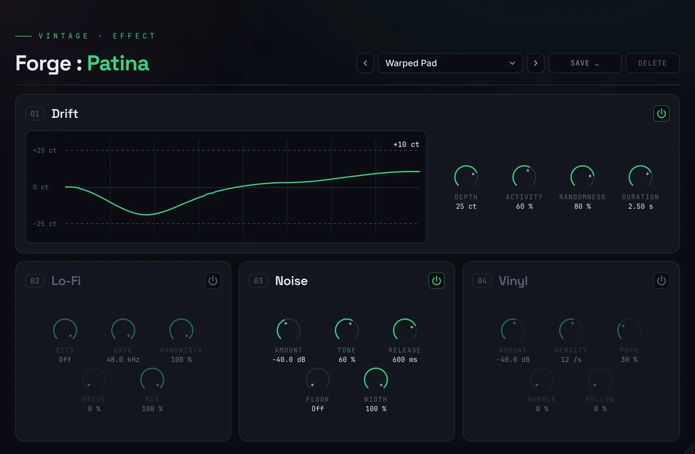
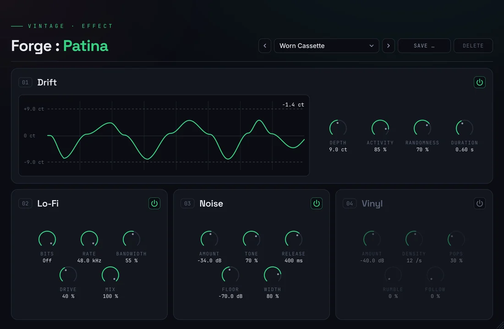
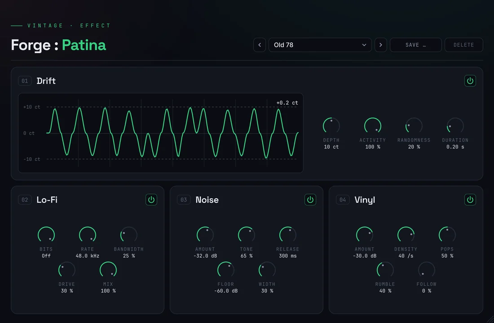

Scot & Millfield Forge · DocumentationForge :
Patina
Your track,
a few years older.
Crafted deep in the Ruhr, from coal and steel.

1 insert
4 stages
10 factory presets
27 ms, compensated
0 hiss in the pauses
Documentation
How it
works
Patina sits on a track or a bus and ages what passes through it, in four stages: the pitch drifts like tape, a lo-fi stage takes away bits and bandwidth, noise follows every note, and the record crackles. Each stage has its own power switch. Pick a topic.
01 / Installation
Set up
on Windows
Patina comes as a ZIP: ScotMillfieldForgePatina_<version>.zip. A .vst3 is a folder. It runs in every DAW on Windows 10 or 11 (64-bit) that loads VST3 effects. Windows only for now; a macOS version is in the works.
ScotMillfieldForgePatina.vst3 to C:\Program Files\Common Files\VST3\.Needs administrator approval02 / Drift
Pitch that
wanders
Like a tape machine or a slightly warped record, the pitch moves away from the original by a few cents and comes back. Most of the time it rests; now and then it swings out. The display shows what you hear over the last eight seconds.

Knobs
- Depth: how far the pitch moves at most, 0 to 50 cents (a semitone is 100). Real tape wobbles by about 2 to 9 cents; 8 cents is the default.
- Activity: how often a swing comes. At every step Patina rolls the dice: with this chance the pitch swings out, otherwise it rests one more step. 0 % keeps the pitch still, 100 % keeps it moving all the time.
- Randomness: at 0 % every swing goes to the full depth, up and down by turns, with steps of equal length – an even wow. Towards 100 % size (20 to 100 % of the depth), direction and length of each swing are left to chance.
- Duration: the length of one step – swinging out, coming back or resting – from 0.1 to 8 seconds. Short steps flutter, long ones drift.
Good to know
- Patina delays the signal by 27 ms to bend the pitch. It reports this latency to your DAW, which keeps the track in time. Switched off, the drift is just this delay – the sound passes unchanged.
- Left and right drift together, so the stereo image stays put.
- Each playback starts the drift over from the song position: the same passage drifts the same way every time, and two bounces of it are identical.
- Very deep drift with very long steps (around 50 cents at 6 to 8 seconds) does not reach the full depth; the display shows what you actually hear.
03 / Lo-Fi
Fewer bits,
less band
The sound of an old sampler, a cassette or a phone line. Off by default; the power switch fades in and out without a click.

Knobs, in the order of the signal
- Drive: soft saturation. The level at −12 dBFS stays as it is, quieter parts get a little louder (2.4 dB at most), louder parts are rounded off.
- Rate: lowers the sample rate, from 48 kHz down to 1 kHz – with the metallic aliasing of early samplers, on purpose.
- Bits: from 24 (off) down to 4, stepless. Fewer bits, more grain.
- Bandwidth: low cut and high cut together, from open (100 %) to a phone line (0 %, 350 Hz to 3.2 kHz). It comes last and so also softens the aliasing.
- Mix: blends the result of all four with the original, from 0 % (original) to 100 % (fully degraded).
04 / Noise
Hiss that
follows the notes
Every note brings its share of noise and takes it along when it fades. So a clean synth gets some grain, and the pauses stay silent. On by default, quietly.
Knobs
- Amount: the level of the noise relative to the signal, from −60 to −12 dB (default −30 dB). A quiet passage gets quiet noise.
- Tone: from dark tape noise (0 %) to bright hiss (100 %). The level stays the same, only the colour changes.
- Release: how long the noise lingers after the signal, 20 ms to 2 s.
- Floor: noise that stays in the pauses too, from Off to −40 dBFS – the sound of a tape machine that keeps running.
- Width: from the same noise on both sides (0 %, in the middle) to independent left and right (100 %).
05 / Vinyl
Crackle,
pops, rumble
The surface of a record: small clicks all the time, now and then a louder pop, and the low rumble of the turntable. Off by default.

Knobs
- Amount: the level of a loud click, −66 to −18 dBFS. Most clicks are much quieter.
- Density: clicks per second, 1 to 100.
- Pops: how often a pop comes, up to about one and a half per second. Pops are 12 dB louder than the crackle, longer and darker.
- Rumble: low rumble below 35 Hz that swells with each turn of the record (33⅓ rpm). Listen on speakers or headphones with bass.
- Follow: at 0 % the record crackles in the pauses too, as a real one does. At 100 % crackle and pops follow your signal and fall silent when it stops. The rumble always stays.
06 / Presets
Ten real
machines
Every factory preset is modelled on a real source, with restrained settings. Each one keeps the level of your track (the telephone a few dB less, as the line cuts the low end). The preset bar sits at the top right, as in Ember and Furnace.
Your own presets
- Save … stores the current settings of all four stages under a name; Delete only works on your own presets. “modified” shows when the sound differs from the loaded preset.
- Location:
Documents\Scot & Millfield Forge\Presets\Patinaas XML. - Every knob is also a parameter in your DAW (“Patina …”): automatable, and undoable where the DAW supports it.
07 / Tips
When something
sounds off
The track sounds out of tune
Less Depth, or less Activity. Bass and drums tolerate far less drift than pads and keys – put Patina on the parts that should wobble, not on the whole mix.
The noise pumps
On very dynamic material the noise rises and falls with every hit. A longer Release smooths it, a little Floor fills the gaps.
The track is late
Patina reports its 27 ms to the DAW. If a track still lags, check that delay compensation is switched on in your DAW.
No sound at all
Without an activated license Patina lets nothing through. Click License at the top right and activate this computer.